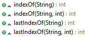
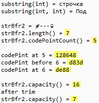

Строки. Часть 3 – создание строк, классы StringBuilder и StringBuffer.
В JDK 5 в дополнение к существующим богатым возможностям обработки строк Java появился новый строковый класс. Этот новый класс называется StringBuilder. Он идентичен StringBuffer за исключением одного важного отличия: он не синхронизирован, что означает, что он не является безопасным в отношении потоков. Выгода от применения StringBuilder связана с более высокой производительностью. Однако в случае разработки многопоточных программ вы должны использовать StringBuffer, а не StringBuilder.
Класс StringBuilder
Объекты класса StringBuilder — это строки переменной длины. Только что созданный объект имеет буфер определенной емкости (capacity), по умолчанию достаточной для хранения 16 символов. Емкость можно задать в конструкторе объекта.
Как только буфер начинает переполняться, его емкость автоматически увеличивается, чтобы вместить новые символы.
В любое время емкость буфера можно увеличить, обратившись к методу
ensureCapacity(int minCapacity);
Этот метод изменит емкость, только если minCapacity будет больше длины хранящейся в объекте строки. Емкость будет увеличена по следующему правилу. Пусть емкость буфера равна N. Тогда новая емкость будет равна
Max(2 * N + 2, minCapacity)
Таким образом, емкость буфера нельзя увеличить менее чем вдвое.
Методом setLength(int newLength) можно установить любую длину строки. Если она окажется больше текущей длины, то дополнительные символы будут равны ' \u0000'. Если она будет меньше текущей длины, то строка окажется обрезанной, последние символы потеряются, точнее, будут заменены символом ' \u0000' . Емкость при этом не изменится.
Если число newLength окажется отрицательным, возникнет исключительная ситуация. Поэтому будьте осторожны, устанавливая новую длину строки.
Количество символов в строке можно узнать так же, как и для объекта класса String, методом length() , а емкость — методом capacity() .
Создать объект класса StringBuilder можно только конструкторами. То есть вы не можете создать строку класса StringBuilder операцией присваивания как мы это делали для класса String.
В классе StringBuilder определены четыре конструктора:
Чтобы понять как создавать строки класса StringBuilder рассмотрим простой пример:
Данная программа генерирует следующий вывод:
Тут все очень просто, strBld1 и strBld2 это пустые строки, которые я не стал выводить на консоль, а вывел только их длину и емкость.
Строка strBld3 хоть и имеет длину 5 символов, но емкость объекта составляет 21 символ.
Совет: Начиная с этого момента я настоятельно рекомендую заглядывать в исходники JDK и смотреть код изучаемых классов, так как это весьма просветляет. Кроме того, я не смогу описать все методы всех классов, для этого есть сами классы и документация к ним, кою я вам и рекомендую регулярно читать.
Добавление подстроки – метод append()
В классе StringBuilder есть более десяти методов append(), добавляющих подстроку в конец строки. Они не создают новый экземпляр строки, а возвращают ссылку на ту же самую, но измененную строку.
Основной метод append(String) присоединяет строку в конец данной строки. Если присоединяемая строка равна null, то добавляется строка "null".
Два аналогичных метода работают с параметром типа StringBuffer и CharSequence.
Шесть методов append(type) добавляют примитивные типы boolean, char, int, long, float, double, преобразованные в строку.
Два метода присоединяют к строке массив char и подмассив символов, преобразованные в строку: append(char[]) и append(char[], int, int).
Есть метод добавляющий к строке кодовую точку (code point) – appendCodePoint(int).
Метод, append(Object obj), добавляет просто объект. Перед этим объект obj преобразуется в строку своим методом toString().
Ну и как всегда немного практики:
Собственно этот пример тоже очень простой и особо пояснять тут почти нечего.
Единственное что стоит отметить, так это использование собственного класса String0009, код которого я приведу чуть ниже.
Добавление даты, и данных класса String009 я сделал, чтобы продемонстрировать, что на объектах при их добавлении вызывается их метод toString().
И кстати сказать, добавление кодовой точки в строку при помощи appendCodePoint() куда проще чем то-же самое мы делали в классе String.
Код класса String009 очень простой и не замысловатый, хотя сейчас он может показаться вам не понятным, но потерпите немного, скоро мы доберемся и до классов.
Два этих класса генерируют следующий вывод:
Вставка подстроки – метод insert()
Более десяти методов insert() предназначены для вставки строки, указанной вторым параметром метода, в данную строку. Место вставки задается первым параметром метода, индексом символа строки, перед которым будет сделана вставка. Он должен быть неотрицательным и меньше длины строки, иначе возникнет исключительная ситуация. Строка раздвигается, емкость буфера при необходимости увеличивается. Методы возвращают ссылку на ту же самую, но преобразованную строку.
Основной метод insert(int, String) вставляет строку в данную строку перед ее символом с индексом int. Если ссылка str == null, вставляется строка "null".
Метод sb.insert(sb.length(), "xxx") будет работать так же, как метод sb.append("xxx").
Шесть методов insert(int, type elem) вставляют примитивные типы boolean, char, int, long, float, double, преобразованные в строку.
Два метода вставляют массив char и подмассив char символов, преобразованные в строку.
Оставшиеся методы вставляют Object преобразованный в строку и объекты класса CharSequence.
Немножко практики:
Данная программа генерирует следующий вывод:
Удаление подстроки или символа – методы delete() и deleteChar()
Метод delete(int beging, int end) удаляет из строки символы, начиная с индекса beginвключительно до индекса end исключительно; если end больше длины строки, то до конца строки. Если begin отрицательно, больше длины строки или больше end, возникает исключительная ситуация. Если begin == end, удаление не происходит.
Метод deleteCharAt(int ind) удаляет символ с указанным индексом ind. Длина строки уменьшается на единицу. Если индекс ind отрицателен или больше длины строки, возникает исключительная ситуация. Допишем предыдущий пример, дабы не плодить классы без необходимости:
Вывод программы:
Переворот строки – метод reverse()
Метод reverse() меняет порядок расположения символов в строке на обратный.
Поиск подстроки в строке – методы indexOf() и lastIndexOf()

Метод indexOf(String str) выполняет поиск первого вхождения str. Возвращает индекс позиции совпадения или -1 в случае неудачи.
Метод indexOf(String str, int startIndex) выполняет поиск первого вхождения str, начиная с startIndex. Возвращает индекс позиции совпадения или -1 в случае неудачи.
Метод lastIndexOf(String str) выполняет поиск последнего вхождения str. Возвращает индекс позиции совпадения или -1 в случае неудачи.
Метод lastIndexOf(String str, int startIndex) выполняет поиск последнего вхождения str, начиная с startIndex. Возвращает индекс позиции совпадения или -1 в случае неудачи.
Вывод программы:
В этой версии программы все тоже достаточно просто, поэтому, я надеюсь, она не требует особых объяснений.
Единственное что хочется еще раз напомнить, что строки в классах StringBuilder и StringBuffer изменяемые и при изменениях не создается нового объекта, а меняется существующий.
Ну вот мы и рассмотрели все методы класса StringBuilder. Далее рассмотрим методы класса StringBuffer. Класс StringBufferимеет все те же методы, что и класс StringBuilder, но так же еще имеет несколько других, поэтому мы рассмотрим только их.
Класс StringBuffer
Получение подстроки из строки – метод substring()
Вы можете получить часть StringBuffer вызовом substring(). Этот метод возвращает строку класса String и имеет две следующие формы:
substring(int startIndex)
substring(int startIndex, int endIndex)
Первая форма возвращает подстроку, которая начинается от startIndex и продолжается до конца объекта StringBuffer. Вторая форма возвращает подстроку от позиции startIndex до endIndex-1.
Например данный код:
StringBuffer strBfr1 = new StringBuffer("Подстрочка");
println("substring(int) = " + strBfr1.substring(3));
println("substring(int, int) = " + strBfr1.substring(0, 3));
выдаст следующий вывод:
substring(int) = строчка
substring(int, int) = Под
Далее есть несколько методов работы с кодовыми точками Unicode:
Методы codePointAt() и codePointBefore() возвращают значение типа int которое представляет кодовую точку Unicode или ее часть для указанного в параметре вызова индекса (символа). Метод codePointCount() возвращает число кодовых точек строки, заключенной между первым и вторым индексами.
Метод offsetByCodePoints(int start, int num) возвращает индекс символа в строке, которая находится на numточек кода позади начального индекса, указанного в start.
И остался еще метод trimToSize() который уменьшает размер символьного буфера объекта с тем, чтобы он соответствовал текущему содержимому.
Все вышеперечисленные методы работы с кодовыми точками и trimToSize() были добавлены в JDK 5.
Ну и для закрепления материала примерчик:
Вывод у программы следующий:

Первые три строки создают строку и затем выделают из нее подстроки.
Затем начинается самое интересно с кодовыми точками. Я подсветил желтым на что надо обратить особое внимание.
Хотя всего в строке 5 символов (ракета, три минуса и монорельс), длина же строки показывает 7 символов (char), это происходит потому, что два символа, ракета и монорельс состоят из двух char.
Далее смотрим сюда внимательно:
И сравниваем коды монорельса и каждого из его двух char с тем что выводит программа.
Ну и на последок показана работа метода trimToSize().